Business Intelligence
Interactive dashboards, semantic models, DAX measures, Power Query transformations, Power BI Service, app publishing, and Row-Level Security.
Cairo, Egypt · Open to high-impact analytics opportunities
Senior Market Research and Data Analyst building Power BI solutions, analytical databases, market-entry studies, and automated reporting workflows for commercial and operational teams.
About me
I combine a foundation in mathematics and statistics with hands-on capability across business intelligence, database design, automation, and market research. My work translates export, sales, customer, logistics, and ERP data into practical answers for managers and business teams.
I am especially interested in the space between data engineering and decision-making: structuring reliable data, building intuitive analytics, and presenting the outcome in a way that makes the next action clear.
Expertise
A practical toolset covering the full analytics workflow.
Interactive dashboards, semantic models, DAX measures, Power Query transformations, Power BI Service, app publishing, and Row-Level Security.
Relational data models, efficient SQL queries, Python-based data processing, reporting automation, and repeatable analytical workflows.
Market-entry assessment, competitor analysis, pricing, market share, customs data, export routes, and executive-ready commercial insights.
Customer segmentation, purchase-cycle analysis, logistics and shipment monitoring, ERP integration, and performance reporting.
Beyond the dashboard
A visual record of the experiences that sharpen my business context and strengthen the way I approach data.

Contributing to a professional learning conversation related to data analytics at ALX.

Attended a Business Development Community meetup focused on practical applications of AI and Agentic AI.

Attended a technical event exploring probabilistic thinking, statistics, machine learning, and AI.

Professional training experience focused on developing practical cement-industry knowledge beyond the dashboard.

Completed the General Cement Course at Amreyah Cement, connecting analytical work with a deeper understanding of cement operations and industry context.

Engaging with professional development environments and Egypt's employment ecosystem.

Professional development through the ALX Freelance Career Maker program.

Professional development through the ALX Freelance Career Maker program.

Completed the Computer Science diploma at Cairo University's Faculty of Graduate Studies for Statistical Research.
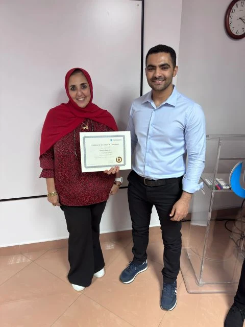
Completed a practical Presentation Skills course with Top Business, focused on presentation delivery, structured communication, practical exercises, feedback, group discussion, and continuous improvement.
Moments Along the Journey
A visual collection of professional experiences, learning environments, industry events, and memorable milestones.

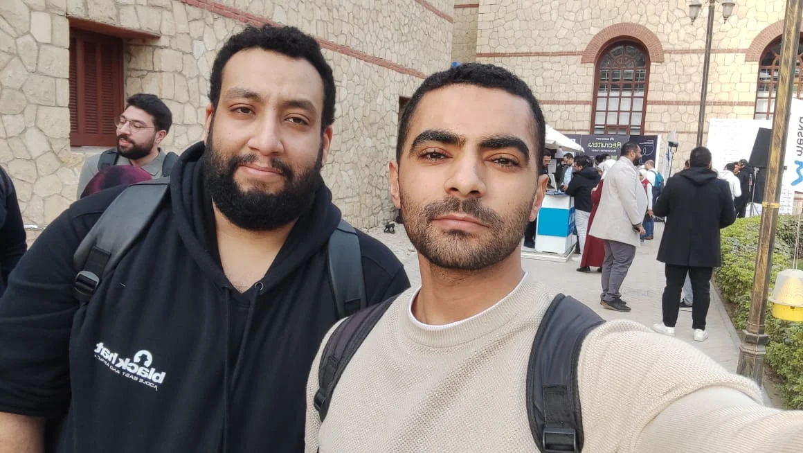
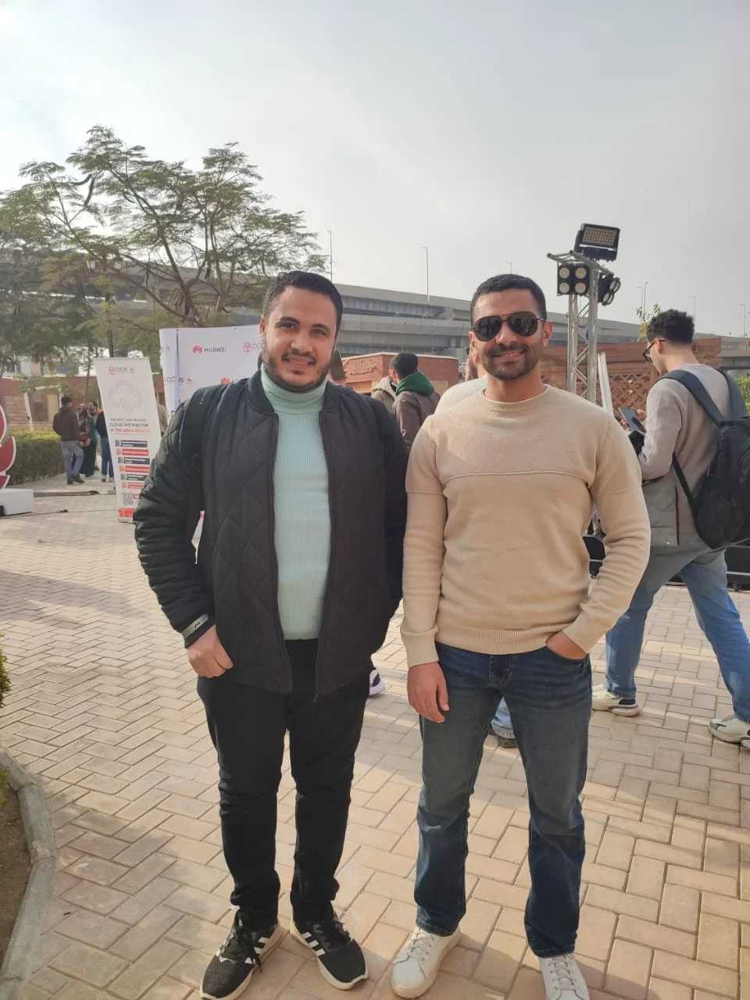
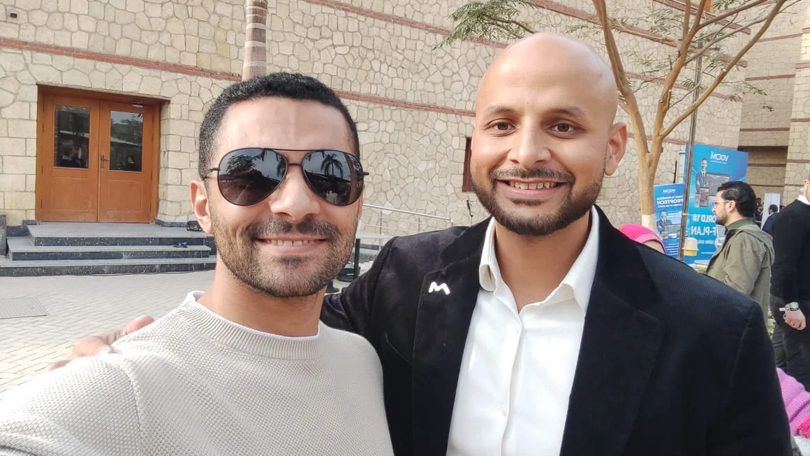
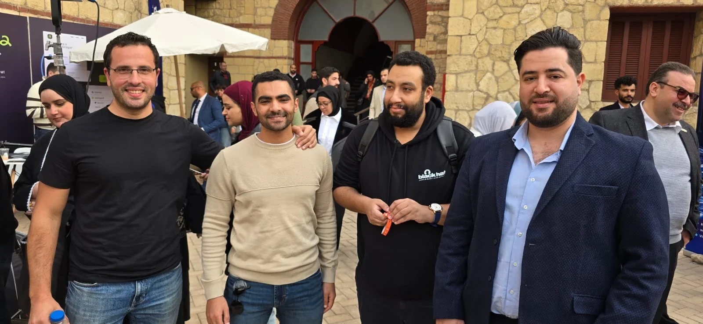
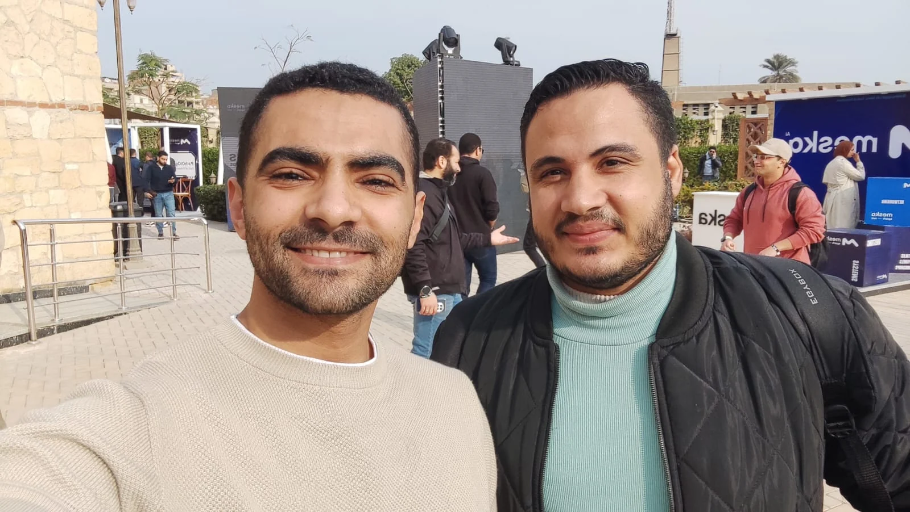

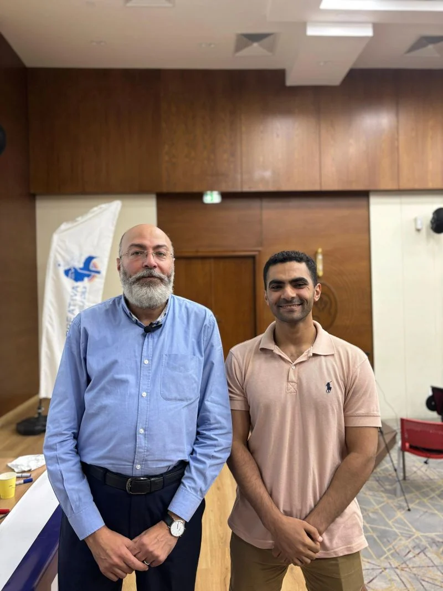
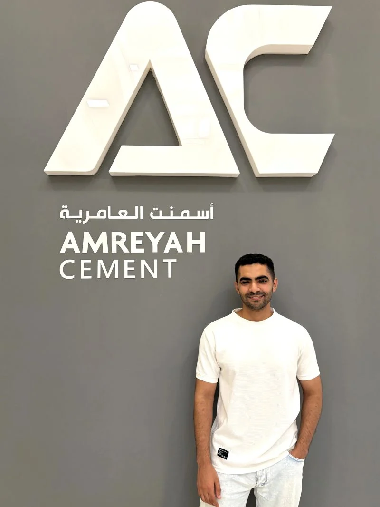
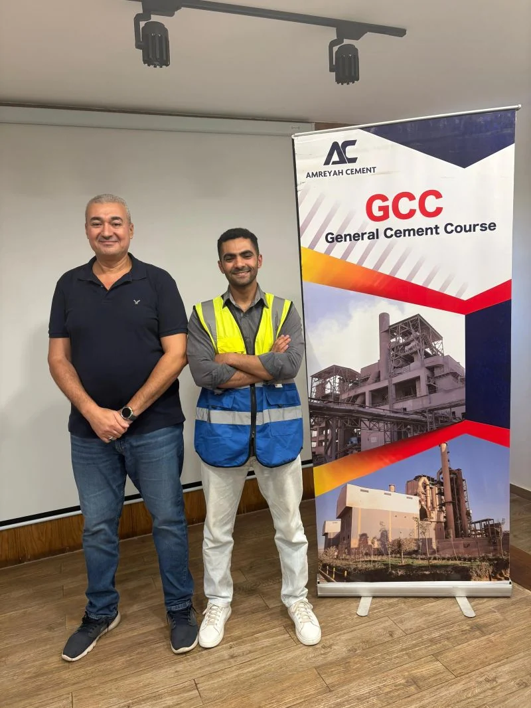

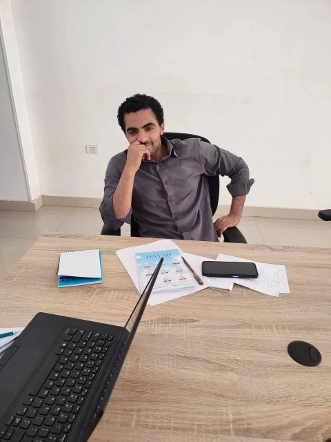

Experience
Leading BI integration and delivering export, pricing, customer, logistics, and market intelligence solutions for the Export Department.
Built sales dashboards and automated reporting workflows while improving data structures, controls, and business visibility.
Completed end-to-end analytical workflows using Excel, Python, and Power BI, from data collection and cleaning to visualization and reporting.
Professional Voice
Selected perspectives on analytics, industry knowledge, AI, career growth, and responsible leadership.
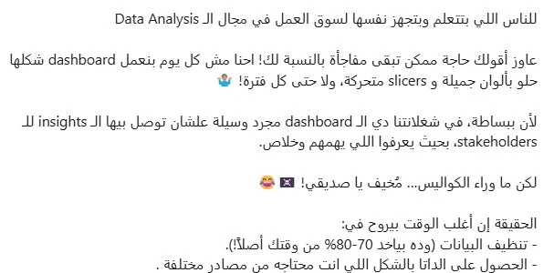
A practical perspective on the real work behind analytics: data access, cleaning, SQL, business understanding, analysis, and automation.
Read on LinkedIn ↗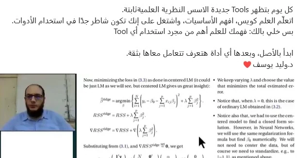
Why analysts need technical capability, communication skills, and the confidence to explain their role and business value.
Read on LinkedIn ↗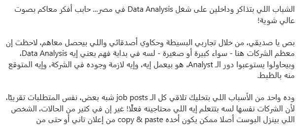
Tools continue to change, but scientific and analytical foundations remain the base for confident problem-solving.
Read on LinkedIn ↗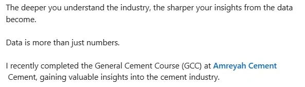
A learning perspective on probability, statistics, and applying theory with Python before relying on tools alone.
Read on LinkedIn ↗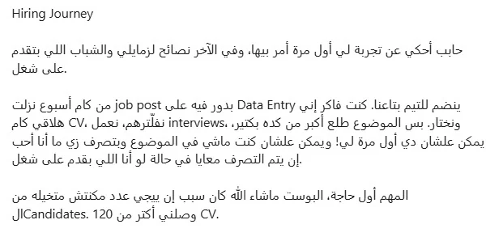
A practical account of reviewing more than 120 CVs, using Python to support initial filtering, and respecting every candidate’s effort.
Read on LinkedIn ↗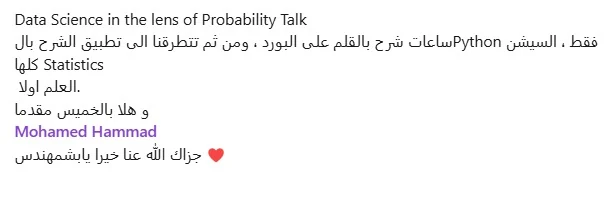
Why deeper knowledge and attention to detail help analysts transform raw data into meaningful business stories.
Read on LinkedIn ↗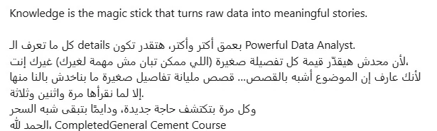
How learning the cement industry strengthened the connection between domain context, operational data, and meaningful insights.
Read on LinkedIn ↗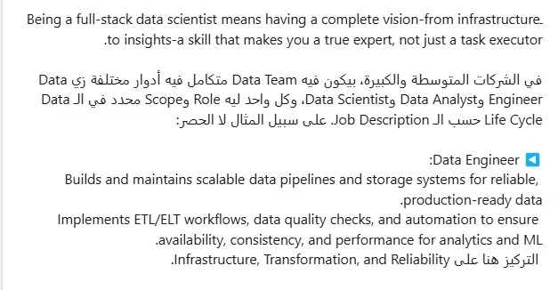
Why analysts in growing organizations benefit from understanding infrastructure, delivery, analysis, and executive recommendations.
Read on LinkedIn ↗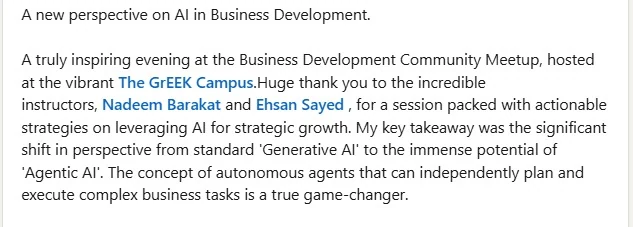
A reflection on autonomous AI agents and their potential to support strategic growth and execute complex business tasks.
Read on LinkedIn ↗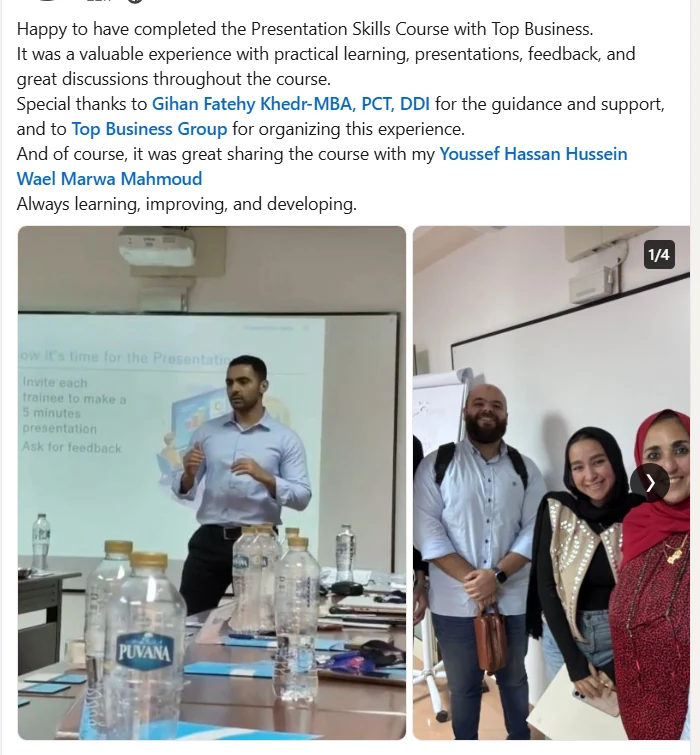
Reflections on completing a practical Presentation Skills course built around presentations, structured communication, feedback, group discussion, and continuous professional development.
Read on LinkedIn ↗Education
Cairo University
Zagazig University
Selected training
Forage
ALX Egypt
Coursera
Let’s connect
I am interested in roles and collaborations involving business intelligence, data integration, commercial analytics, and market intelligence.